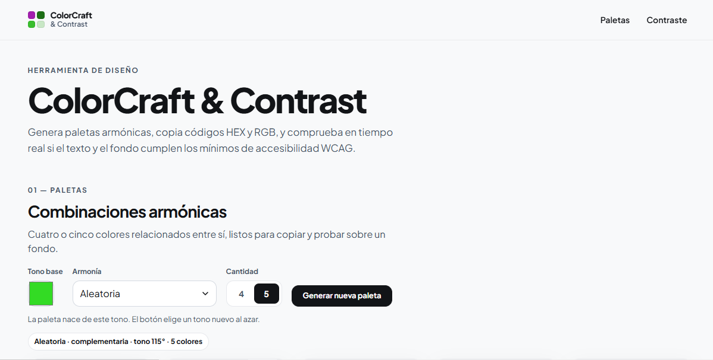
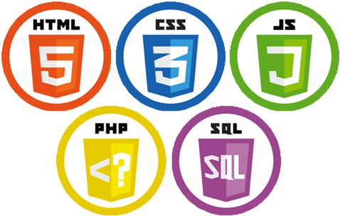
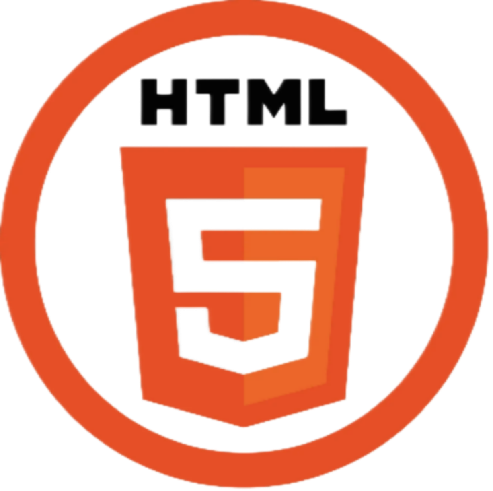
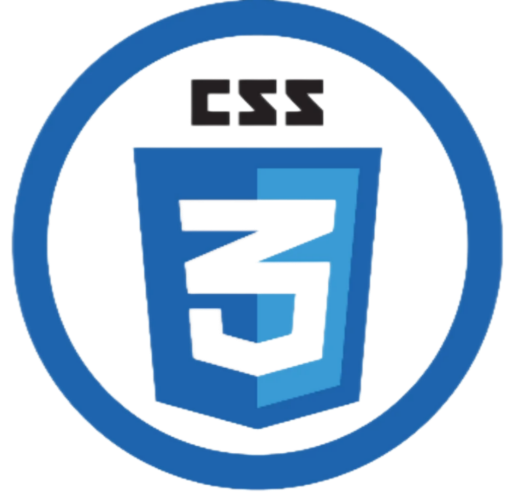
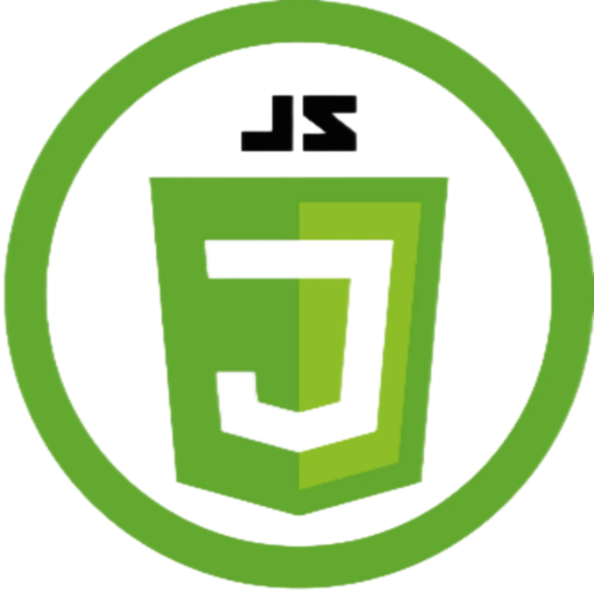
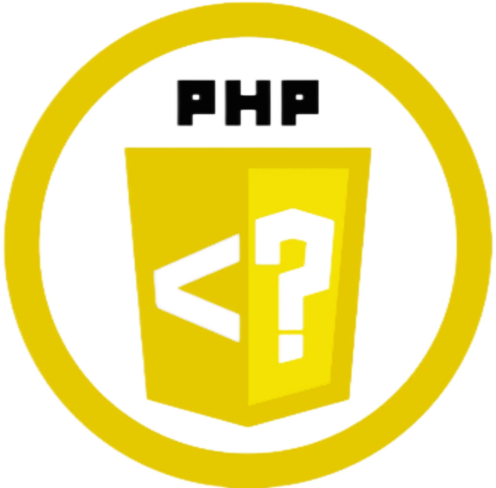
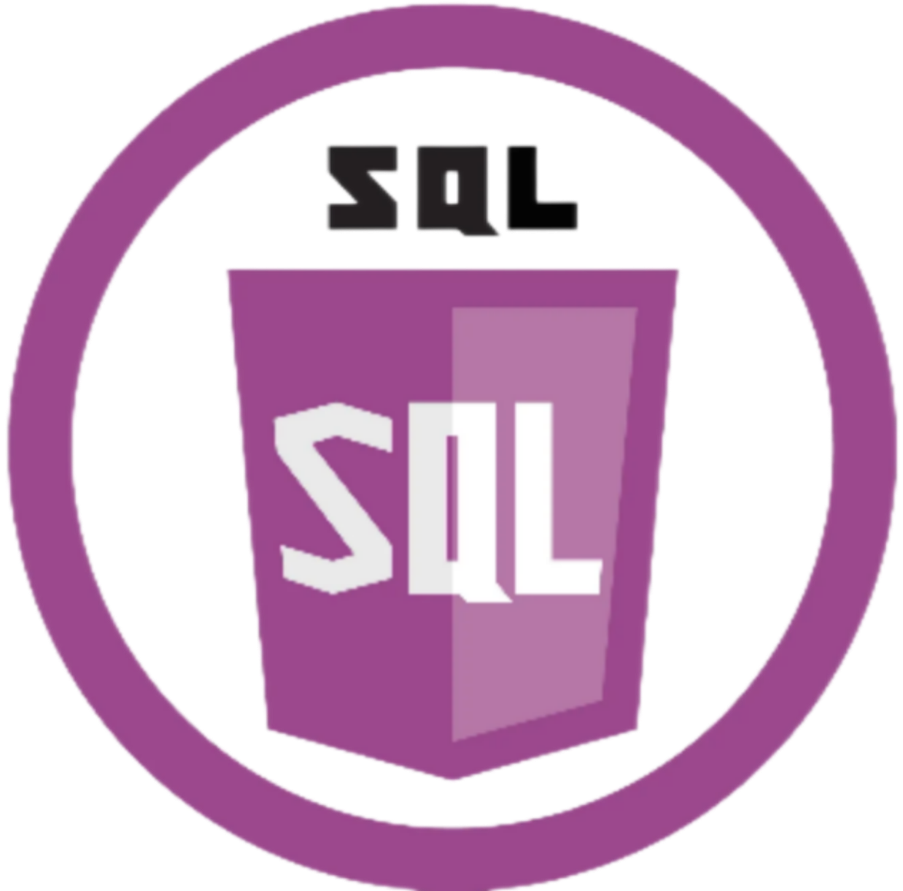

Herramienta de diseño
ColorCraft & Contrast
Genera paletas armónicas de cuatro o cinco colores, copia sus códigos HEX y RGB, y comprueba en tiempo real si el texto y el fondo cumplen el contraste WCAG.
- HTML
- CSS
- JavaScript
Disponible para oportunidades laborales
Alumno de Desarrollo de Aplicaciones Web
Desarrollador Full Stack Junior en formación
con interés en ampliar mis
conocimientos técnicos y desarrollar una trayectoria profesional sólida
dentro del sector tecnológico, aportando compromiso, gran capacidad de
aprendizaje, responsabilidad, capacidad resolutiva y una fuerte motivación por seguir
evolucionando como profesional.







Herramienta de diseño
Genera paletas armónicas de cuatro o cinco colores, copia sus códigos HEX y RGB, y comprueba en tiempo real si el texto y el fondo cumplen el contraste WCAG.